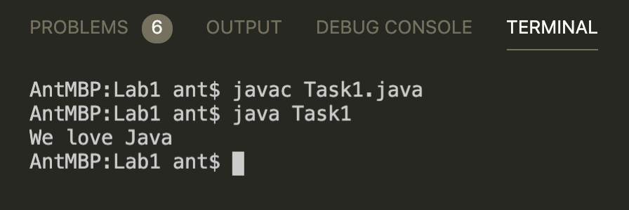

เรื่อง
กระบวนการคิดเชิงการพัฒนาโปรแกรม และการแสดงผลทางหน้าจอ
วัตถุประสงค์
เพื่อฝึกฝนกระบวนการคิดสําหรับการพัฒนาโปรแกรม ใช้คําสั่งสําหรับการแสดงผลทางหน้าจอ และใช้คําสั่งสําหรับการแสดงผลทางหน้าจอด้วยภาษา Java
หัวข้อ
- ฝึกกระบวนการคิดในการพัฒนาโปรแกรม โดยอาศัยตัวแปร และ ตัวดําเนินการทางคณิตศาสตร์
ทดสอบทุกงาน
javac YourClassName.javajava YourClassName

Task 1
แก้ไขข้อผิดพลาดในโปรแกรมนี้ เพื่อที่จะพิมพ์ "We love Java"
Task1.java
class Task1 {
public static viod hello(String[] args) {
System.println("We love Java")
}Task 2
จงเขียนโปรแกรมแสดง รหัสนิสิต ชื่อ-นามสกุล สาขาวิชา และ ที่อยู่ โดยให้แสดงผลแยกคนละละบรรทัด ตัวอย่างเช่น
63312135 Matee Muangdee Applied Physics 9/12 Moo 2, Thapho, Muang, Phitsanulok 65000
Task 3
ให้นิสิตเขียนโปรแกรมโดยตั้งชื่อไฟล์เป็น Task3.java พร้อมเขียนโปรแกรมแสดงผลบนจอตามภาพ
+-+-+-+ | | | | +-+-+-+ | | | | +-+-+-+ | | | | +-+-+-+
Task 4
ทำโปรแกรมให้เสร็จสมบูรณ์เพื่อให้แสดงผล...
Alvin has 1 brother and 3 sisters.
มันจะต้องใช้ตัวแปร!
Task4.java
class Task4 {
public static void main(String[] args) {
String name = "Alvin";
int brothers = 1;
int sisters = 3;
???
}
}Task 5
ให้นิสิตเขียนโปรแกรมโดยตั้งชื่อไฟล์เป็น Task4.java พร้อมเขียนโปรแกรมแสดงผลบนจอตามภาพ
บรรทัดแรกแสดงข้อความ "7 + 3 = 10"
บรรทัดสองแสดงข้อความ "6.4 + 5.2 = 11.6"
Task5.java
class Task5 {
public static void main(String[] args) {
int a = 7;
int b = 3;
float c = 6.4f;
float d = 5.2f;
???
}
}Task 6
ให้นิสิตกำหนดชนิดข้อมูล (data type) ในภาษา Java ให้เหมาะสมสำหรับการใช้แทนข้อมูลดังต่อไปนี้
- จำนวนคนบนรถโดยสารประจำทาง ______________
- น้ำหนักของอาหารที่ซื้อขายกันในตลาด ______________
- เกรดของนิสิต ตัวอย่างเช่น เกรด A, B, C, D, F ______________
- เลขบัตรประชาชน ______________
Task 7
ให้นิสิตประกาศชื่อตัวแปรให้สอดคล้องกับข้อกำหนดต่อไปนี้ เขียนเป็นภาษา Java
- จัดเก็บอายุคน int age;
- จัดเก็บชื่อ __________________________
- เงินเดือน __________________________
- น้ำหนัก __________________________
- จำนวนวันที่ทำงานต่อเดือน __________________________
- จำนวนวันที่ขาดต่อเดือน __________________________
- ชื่อแผนกที่ทำงาน เช่น IT, Manager, Engineer __________________________
Task 8
พิจารณา source code ต่อไปนี้ว่ามีข้อผิดพลาด (error) หรือไม่ ถ้ามี error ผิดตรงบรรทัดไหนและแก้ไขอย่างไรให้ถูกต้อง
int x = 75.5;
double y = 75;
Task 9
ให้นิสิตค้นหาและทำการขีดคร่อมชุดคำสั่งที่เขียนไม่ถูกต้อง โดยให้เขียนใหม่ทั้งหมดลงด้านล่างต่อไปนี้
Task9.java
class Task9 {
public static void main(String[] args) {
float pi = 3.141;
float radius = 5.0;
System.out.____________("Radius is " + radius);
float area = ____________ * radius * radius;
System.out.println("Area is " + _____________);
float perimeter = 2 * ____________ * ___________;
System.out.println("Perimeter is " + perimeter);
}
}Task 10
ให้นิสิตเขียนโปรแกรมต่อไปนี้ให้สมบูรณ์ เพื่อคำนวณหาค่าของ  สมการ โดยกำหนด
สมการ โดยกำหนด
ให้ x = 0.25
Task10.java
class Task10 {
public static void main(String[] args) {
double x = 0.25;
double y = _________________________________;
System.out.println("Value of y is " + y);
}
}- Geeks for Geeks - Variables in Java https://www.geeksforgeeks.org/variables-in-java/
- W3Schools - Java Variables https://www.w3schools.com/java/java_variables.asp